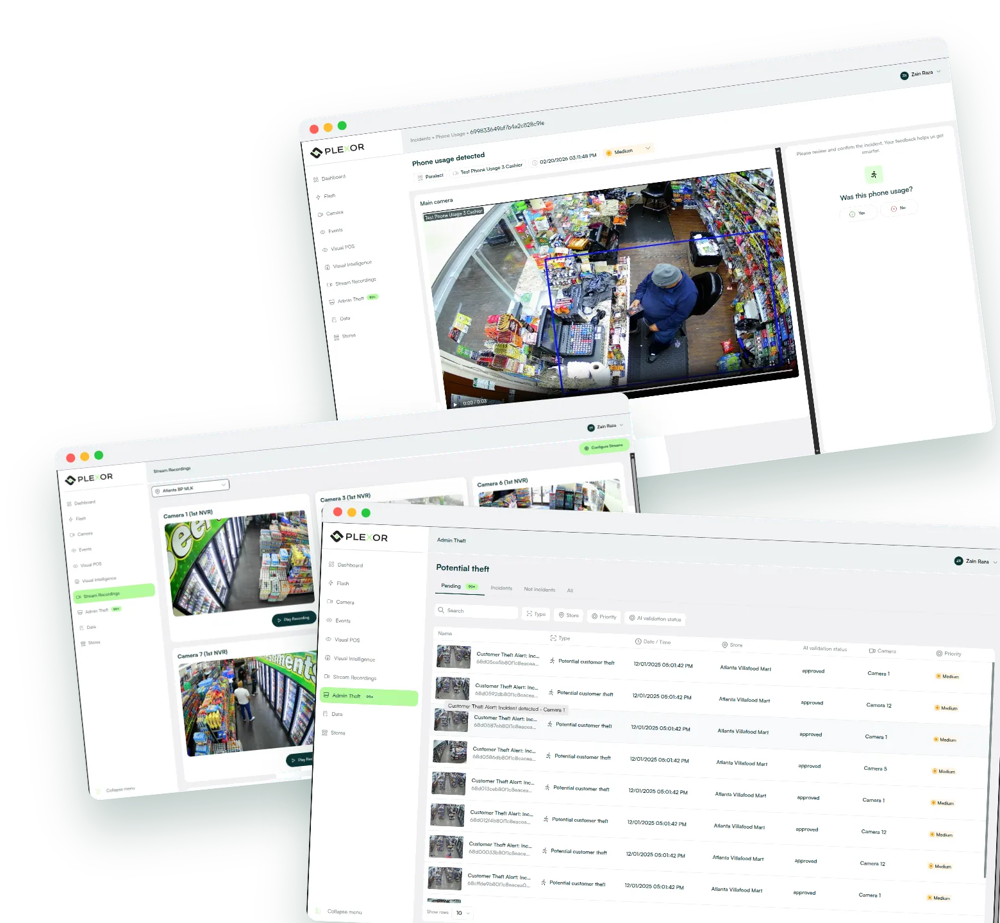
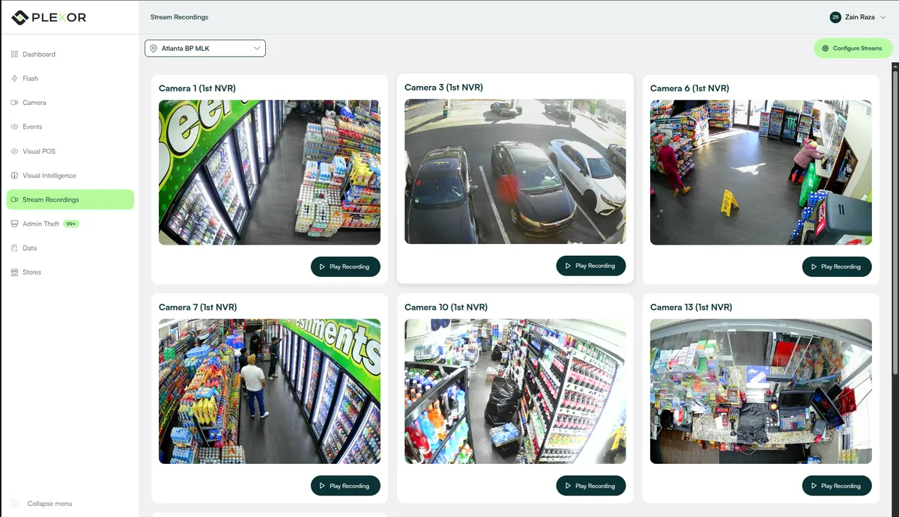
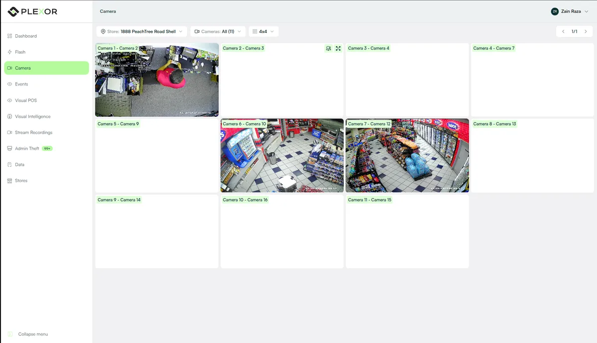
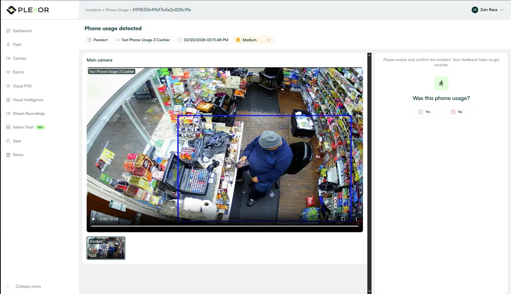
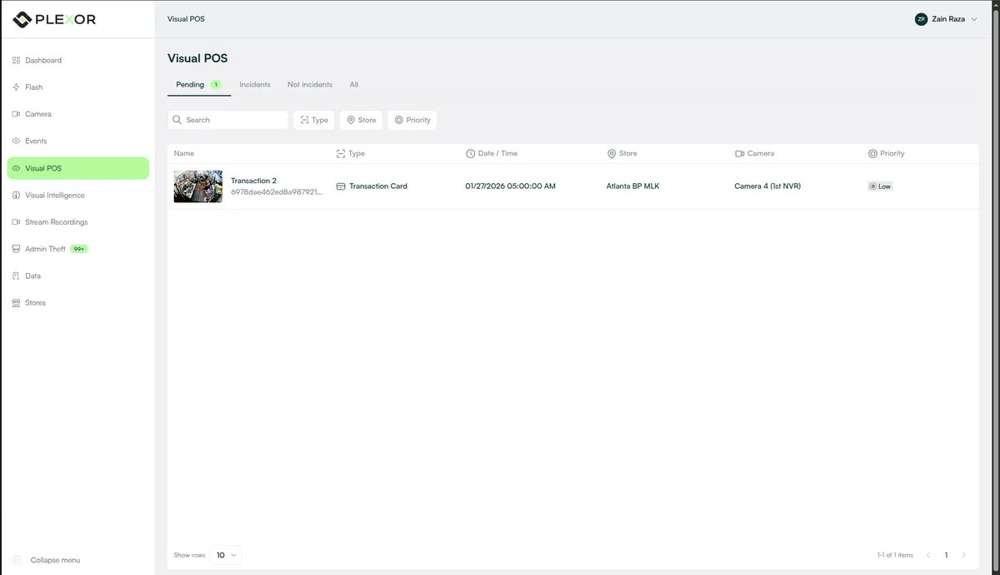

Plexor
Retail loss prevention, flagged while it happens.
A multi-camera computer-vision platform for retail loss prevention: it detects theft, POS under-ringing, phone use and loitering across 100+ stores and routes prioritised alerts to store and district managers.

Catch shrinkage while it is happening.
Employee and customer theft and POS under-ringing are hard to catch live. Plexor watches the store cameras, detects these events in real time and sends prioritised alerts to the store and district managers who can act on them. My part was the web side; training the detection models was not.
- Theft by employees and by customers
- POS under-ringing
- Phone use and loitering
- Prioritised alerts for store and district managers
A realtime pipeline from camera to manager.
- Cameras
- Store camerasMulti-camera feeds
- Video
- AWS video servicesRealtime video and inference pipeline
- Inference
- Detection models37+ models, about 700ms
- Routing
- Node.js backendAlert and event routing
- Dashboards
- Next.js, ReactStore and district managers
Stack
- Next.js
- React
- Node.js
- AWS video services
Key decisions
- 01The realtime multi-camera video and inference pipeline runs on AWS video services
- 02Alert and event routing on a Node.js backend, prioritised for the managers who act on it
- 03Role-scoped Next.js dashboards for store and district managers
What I worked on.
- Led the web side: the realtime video and inference pipeline on AWS video services (about 700ms inference across 37+ detection models), alert routing on a Node.js backend, and role-scoped Next.js dashboards.
Inside the console.
Loss-prevention console, web





Theft and POS under-ringing surface while they happen across the monitored stores, and each alert reaches the manager who can act on it. I led the web side that carries the models' results to those managers.